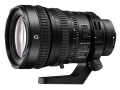
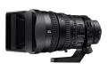

器材库 > 35mm画幅AF变焦镜头 > FE PZ 28-135/4 G OSS

详细规格
发布日期
2014-09-15
厂家推荐价格
2,499.00 （美元）
焦距
28-135mm
最大光圈
F4
最小光圈
F22
镜头结构
18片/12组
非球面镜片
5片
低/超低色散镜片
3片
光圈叶片
9片
最近对焦距离
40cm
最大放大倍率
0.15倍
滤镜口径
95mm
镜头卡口
Sony E
防抖
是
颜色
黑色
尺寸
163 x 105mm
重量
1215g
备注
电动变焦
浮世君2015-03-23 07:154.58 分
操作性 4.50耐用性 5.00性价比 4.00解像力 5.00色彩还原 4.00机械结构 5.00
产品图 / 样片
